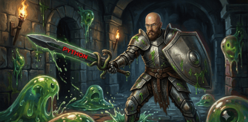

<!DOCTYPE html>
<html lang="en">
<head>
<meta charset="UTF-8">
<meta name="viewport" content="width=device-width, initial-scale=1, maximum-scale=1">
<title>ML Dungeon</title>
<link rel="preconnect" href="https://fonts.googleapis.com">
<link href="https://fonts.googleapis.com/css2?family=Press+Start+2P&family=VT323&display=swap" rel="stylesheet">
<style>
  :root{
    --stone-deep:#15121e;
    --stone-mid:#241f34;
    --stone-hi:#332c48;
    --moss:#6fae5c;
    --moss-dim:#3e6b39;
    --bone:#cabf9e;
    --blood:#c0392b;
    --arcane:#a476e0;
    --arcane-dim:#5d4085;
    --gold:#d9a441;
    --text:#ece6d6;
    --text-dim:#9c93b0;
    --panel-shadow: 0 8px 0 #0a0812, 0 20px 30px rgba(0,0,0,0.6);
  }
  *{box-sizing:border-box;}
  body{
    margin:0;
    background:radial-gradient(ellipse at 50% 0%, #241f34 0%, #0c0a13 70%);
    font-family:'VT323', monospace;
    color:var(--text);
    display:flex;
    justify-content:center;
    padding:28px 14px;
    min-height:100vh;
  }
  .display{font-family:'Press Start 2P', monospace;}

  #game{
    width:100%;
    max-width:720px;
  }

  /* ---------- HEADER ---------- */
  .topbar{
    display:flex;
    align-items:center;
    justify-content:space-between;
    margin-bottom:10px;
    gap:10px;
    flex-wrap:wrap;
  }
  .title{
    font-size:13px;
    color:var(--gold);
    letter-spacing:1px;
    text-shadow:2px 2px 0 #000;
  }
  .hearts{display:flex; gap:6px;}
  .topbar-controls{
    display:flex;
    align-items:center;
    gap:16px;
  }
  .heart{width:20px;height:18px;}
  .level-dots{display:flex; gap:8px; align-items:center;}
  .dot{
    width:14px;height:14px;border-radius:2px;
    background:var(--stone-hi);
    border:2px solid #000;
    transform:rotate(45deg);
  }
  .dot.active{background:var(--gold); box-shadow:0 0 8px var(--gold);}
  .dot.done{background:var(--moss);}

  /* ---------- SCENE PANEL ---------- */
  .scene-frame{
    position:relative;
    border:4px solid #000;
    outline:3px solid var(--stone-hi);
    outline-offset:-1px;
    border-radius:4px;
    box-shadow:var(--panel-shadow);
    overflow:hidden;
    height:280px;
    background:var(--stone-deep);
  }
  .scene-bg{position:absolute; inset:0; width:100%; height:100%;}
  .vignette{
    position:absolute; inset:0;
    background:radial-gradient(ellipse at 50% 40%, transparent 40%, rgba(0,0,0,0.65) 100%);
    pointer-events:none;
  }
  .torch{
    position:absolute; top:8px; width:30px; height:72px;
  }
  .torch.left{left:12px;} .torch.right{right:12px;}
  .flame{
    animation:flicker 1.4s infinite ease-in-out;
    transform-origin:50% 100%;
  }
  @keyframes flicker{
    0%,100%{ transform:scaleY(1) scaleX(1) translateX(0); opacity:1;}
    30%{ transform:scaleY(1.15) scaleX(0.9) translateX(1px); opacity:0.9;}
    55%{ transform:scaleY(0.9) scaleX(1.05) translateX(-1px); opacity:1;}
    80%{ transform:scaleY(1.08) scaleX(0.95); opacity:0.85;}
  }
  .char-wrap{
    position:absolute;
    bottom:18px; left:50%;
    transform:translateX(-50%);
    width:170px; height:170px;
    animation:bob 2.6s infinite ease-in-out;
    filter:drop-shadow(0 10px 14px rgba(0,0,0,0.6));
  }
  .char-scale-inner{
    width:100%; height:100%;
    transform-origin:50% 100%;
    transition:transform 0.6s ease;
  }
  @keyframes bob{
    0%,100%{transform:translateX(-50%) translateY(0);}
    50%{transform:translateX(-50%) translateY(-8px);}
  }
  .char-hit{ animation:hitshake 0.4s ease; }
  @keyframes hitshake{
    0%,100%{transform:translateX(-50%);}
    25%{transform:translateX(-58%);}
    75%{transform:translateX(-42%);}
  }
  .speaker-tag{
    position:absolute; top:12px; left:50%; transform:translateX(-50%);
    font-family:'Press Start 2P';
    font-size:10px;
    background:#000;
    border:2px solid var(--gold);
    color:var(--gold);
    padding:6px 10px;
    letter-spacing:1px;
    white-space:nowrap;
  }

  .boss-hp-wrap{
    position:absolute; top:56px; left:50%; transform:translateX(-50%);
    width:70%;
    display:flex; gap:4px;
  }
  .boss-hp-seg{
    flex:1; height:10px; background:var(--stone-hi);
    border:2px solid #000;
  }
  .boss-hp-seg.filled{background:var(--arcane); box-shadow:0 0 6px var(--arcane);}

  /* ---------- DIALOG / QUESTION PANEL ---------- */
  .panel{
    margin-top:14px;
    background:var(--stone-mid);
    border:4px solid #000;
    outline:3px solid var(--stone-hi);
    outline-offset:-1px;
    border-radius:4px;
    box-shadow:var(--panel-shadow);
    padding:18px 20px;
  }
  .flavor{
    font-size:20px;
    color:var(--text-dim);
    font-style:italic;
    margin:0 0 10px 0;
    line-height:1.35;
    border-left:3px solid var(--gold);
    padding-left:10px;
  }
  .question{
    font-size:23px;
    line-height:1.4;
    margin:0 0 16px 0;
    color:var(--text);
  }
  .dm-tag{
    display:inline-block;
    font-family:'Press Start 2P';
    font-size:8px;
    color:var(--arcane);
    background:rgba(164,118,224,0.12);
    border:1px solid var(--arcane-dim);
    padding:3px 6px;
    margin-left:8px;
    letter-spacing:0.5px;
    vertical-align:middle;
    white-space:nowrap;
  }
  .dm-tag.pulsing{ animation:dmpulse 1.2s infinite ease-in-out; }
  @keyframes dmpulse{
    0%,100%{opacity:0.5;}
    50%{opacity:1;}
  }
  .flavor.dm-loading{ opacity:0.75; }

  .dm-toggle-row{
    display:flex;
    align-items:center;
    gap:8px;
    font-size:15px;
    color:var(--text-dim);
  }
  .dm-switch{
    width:34px; height:18px;
    background:var(--stone-hi);
    border:2px solid #000;
    border-radius:10px;
    position:relative;
    cursor:pointer;
    flex-shrink:0;
  }
  .dm-switch.on{ background:var(--arcane-dim); }
  .dm-switch .knob{
    position:absolute; top:1px; left:1px;
    width:12px; height:12px;
    background:var(--text-dim);
    border-radius:50%;
    transition:left 0.15s ease, background 0.15s ease;
  }
  .dm-switch.on .knob{ left:17px; background:var(--arcane); }
  .choices{
    display:grid;
    gap:10px;
  }
  .choice{
    display:flex;
    align-items:center;
    gap:10px;
    background:var(--stone-hi);
    border:2px solid #000;
    border-bottom:4px solid #000;
    color:var(--text);
    font-family:'VT323';
    font-size:20px;
    padding:10px 14px;
    text-align:left;
    cursor:pointer;
    transition:transform 0.08s ease, background 0.15s ease;
  }
  .choice:hover:not(:disabled){ background:#3f3758; transform:translateY(-2px);}
  .choice:active:not(:disabled){ transform:translateY(1px); border-bottom-width:2px;}
  .choice:disabled{cursor:default;}
  .choice .letter{
    font-family:'Press Start 2P';
    font-size:11px;
    color:var(--gold);
    flex-shrink:0;
  }
  .choice.correct{ background:var(--moss-dim); border-color:var(--moss); box-shadow:0 0 10px var(--moss);}
  .choice.wrong{ background:#4a2222; border-color:var(--blood); box-shadow:0 0 10px var(--blood);}
  .choice.dim{ opacity:0.45; }

  .feedback{
    margin-top:14px;
    padding:12px 14px;
    border-left:4px solid var(--gold);
    background:rgba(0,0,0,0.25);
    font-size:20px;
    line-height:1.4;
    display:none;
  }
  .feedback.show{display:block;}
  .feedback.good{border-left-color:var(--moss);}
  .feedback.bad{border-left-color:var(--blood);}
  .fb-title{
    font-family:'Press Start 2P';
    font-size:11px;
    display:block;
    margin-bottom:6px;
  }
  .fb-title.good{color:var(--moss);}
  .fb-title.bad{color:var(--blood);}

  .continue-row{ margin-top:16px; text-align:right; }
  .btn{
    font-family:'Press Start 2P';
    font-size:11px;
    background:var(--gold);
    color:#241a05;
    border:none;
    border-bottom:4px solid #8a651f;
    padding:12px 18px;
    cursor:pointer;
    letter-spacing:1px;
    display:none;
  }
  .btn.show{display:inline-block;}
  .btn:active{ transform:translateY(2px); border-bottom-width:2px;}
  .btn.secondary{ background:var(--stone-hi); color:var(--text); border-bottom-color:#000;}

  /* ---------- START / END SCREENS ---------- */
  .cover{
    text-align:center;
    padding:40px 20px;
  }
  .cover h1{
    font-family:'Press Start 2P';
    font-size:22px;
    color:var(--gold);
    line-height:1.6;
    text-shadow:3px 3px 0 #000;
    margin-bottom:18px;
  }
  .cover p{ font-size:22px; color:var(--text-dim); max-width:480px; margin:0 auto 26px; line-height:1.5;}
  .cover .btn{ display:inline-block; font-size:13px; padding:16px 26px;}

  .stat-line{ font-size:20px; color:var(--text-dim); margin-top:18px;}
  .stat-line b{ color:var(--gold); }

  .loot-row{
    display:flex;
    justify-content:center;
    align-items:flex-end;
    gap:18px;
    margin:6px auto 16px;
    flex-wrap:wrap;
  }
  .loot-icon{ height:auto; flex-shrink:0; }
  .icon-chest{width:130px;}
  .icon-wizard-diss{width:130px;}
  .icon-helmet{width:98px;}
  .icon-sword{width:112px;}
  .icon-skull{width:104px;}

  @media (max-width:600px){
    body{ padding:14px 8px; }
    .topbar{ flex-direction:column; align-items:stretch; gap:10px; }
    .title{ font-size:11px; text-align:center; }
    .topbar-controls{ justify-content:space-between; width:100%; }
    .dm-toggle-row{ font-size:13px; }
    .level-dots{ justify-content:center; flex-wrap:wrap; }
    .level-dots span{ font-size:14px !important; margin-left:6px !important; }

    .scene-frame{ height:220px; }
    .char-wrap{ width:130px; height:130px; bottom:10px; }
    .torch{ width:22px; height:52px; top:6px; }
    .torch.left{ left:8px; } .torch.right{ right:8px; }
    .speaker-tag{ font-size:8px; padding:5px 8px; top:8px; }
    .boss-hp-wrap{ top:42px; width:80%; }
    .boss-hp-seg{ height:8px; }

    .panel{ padding:14px 14px; }
    .flavor{ font-size:17px; padding-left:8px; }
    .question{ font-size:19px; margin-bottom:12px; }
    .choice{ font-size:16px; padding:9px 10px; gap:8px; }
    .choice .letter{ font-size:10px; }
    .feedback{ font-size:16px; padding:10px 12px; }
    .fb-title{ font-size:10px; }
    .btn{ font-size:10px; padding:11px 14px; }
    .dm-tag{ font-size:7px; padding:2px 5px; }

    .cover{ padding:26px 12px; }
    .cover h1{ font-size:16px; }
    .cover p{ font-size:17px; }
    .stat-line{ font-size:17px; }

    .loot-row{ gap:10px; }
    .icon-chest{ width:96px; }
    .icon-wizard-diss{ width:96px; }
    .icon-helmet{ width:72px; }
    .icon-sword{ width:82px; }
    .icon-skull{ width:78px; }
  }

  @media (max-width:360px){
    .scene-frame{ height:195px; }
    .char-wrap{ width:110px; height:110px; }
    .torch{ width:18px; height:44px; }
    .question{ font-size:17px; }
    .choice{ font-size:15px; }
  }
</style>
</head>
<body>
<div id="game"></div>

<script>
/* ============ CONTENT ============ */
const QUESTIONS = {
  slime: [
    {
      flavor: "A translucent green blob quivers in the torchlight, humming a lopsided little tune.",
      q: "Gel the slime memorized every pebble on the cave floor. In the next cave, it stumbles constantly. What happened?",
      topic: "overfitting",
      opts: [
        "Underfitting \u2014 it didn't learn enough",
        "Overfitting \u2014 it memorized noise instead of general patterns",
        "It needs more training data to memorize",
        "The cave floor changed the model's parameters"
      ],
      correct: 1,
      explain: "Overfitting means the model fit the training data (including its quirks) so closely that it fails to generalize to new, unseen data."
    },
    {
      flavor: "A second slime bounces up, splitting itself into two smaller puddles for inspection.",
      q: "Why does a slime split the dungeon map into a 'training' puddle and a 'test' puddle before learning the terrain?",
      topic: "train/test split",
      opts: [
        "To make the map look organized",
        "To train faster by using less data",
        "To honestly evaluate how well it generalizes to data it hasn't seen",
        "Because slimes can only hold small amounts of data"
      ],
      correct: 2,
      explain: "A held-out test set estimates performance on unseen data, giving an honest read on generalization instead of just memorization."
    },
    {
      flavor: "The largest slime in the cavern glows faintly, absorbing torchlight, shadow, and moisture readings.",
      q: "The slime senses torch-heat, moisture, and echo-distance to decide where to hide. In ML terms, what are these three signals called?",
      topic: "features",
      opts: [
        "Labels",
        "Features",
        "Hyperparameters",
        "Epochs"
      ],
      correct: 1,
      explain: "Features are the measurable input variables (like heat, moisture, distance) a model uses to make predictions."
    },
    {
      flavor: "A jittery little slime keeps re-tasting the same three puddles over and over, sure it has the whole cave figured out.",
      q: "The jittery slime scores 99% on the puddles it already tasted, but flounders on any puddle it hasn't seen. What is this a textbook sign of?",
      topic: "overfitting",
      opts: [
        "Overfitting \u2014 it learned the training puddles too specifically",
        "Underfitting \u2014 it hasn't tasted enough puddles",
        "Perfect generalization",
        "A labeling error in the data"
      ],
      correct: 0,
      explain: "Sky-high training performance paired with poor performance on new data is the classic signature of overfitting."
    },
    {
      flavor: "A cautious slime refuses to make a single prediction about the cave until it has set aside a separate pool to check itself against later.",
      q: "Why would this slime deliberately withhold part of the map data instead of learning from every inch of the cave?",
      topic: "train/test split",
      opts: [
        "It's being lazy and skipping data",
        "It wants an unbiased set of data to check how well it actually generalizes",
        "Slimes can't process more than half a cave at once",
        "It's trying to memorize the withheld part first"
      ],
      correct: 1,
      explain: "Holding out a test set gives an unbiased check on generalization \u2014 evaluating on data the model never trained on."
    },
    {
      flavor: "A pale slime taps three different sensors against the wall \u2014 warmth, dampness, and the echo of its own bounce.",
      q: "The slime feeds warmth, dampness, and echo-timing into its decision. What role do these three readings play in a machine learning model?",
      topic: "features",
      opts: [
        "They are the model's output predictions",
        "They are the input features used to make a prediction",
        "They are hyperparameters tuned before training",
        "They are the loss function"
      ],
      correct: 1,
      explain: "Inputs like warmth, dampness, and echo-timing are features \u2014 the measurable variables fed into a model to produce a prediction."
    }
  ],
  skeleton: [
    {
      flavor: "Bones clatter together in the dark, assembling into a rattling guardian with hollow violet eyes.",
      q: "A rigid skeleton predicts the same way every time and misses obvious patterns (high bias). A jittery skeleton predicts wildly differently depending on tiny changes (high variance). What's this tension called?",
      topic: "bias-variance tradeoff",
      opts: [
        "The overfitting paradox",
        "The bias-variance tradeoff",
        "Gradient explosion",
        "The curse of dimensionality"
      ],
      correct: 1,
      explain: "The bias-variance tradeoff describes the balance between a model too rigid to capture patterns (high bias) and one too sensitive to noise (high variance)."
    },
    {
      flavor: "A second skeleton grips a chain that seems to hold its own limbs from flailing too wildly.",
      q: "The skeleton wraps its swinging blade-arm in a chain to keep swings from getting too wild. Which ML concept does this chain resemble?",
      topic: "regularization",
      opts: [
        "Regularization \u2014 penalizing overly large or complex model weights",
        "Normalization \u2014 rescaling input features",
        "Backpropagation \u2014 passing error signals backward",
        "Clustering \u2014 grouping similar data points"
      ],
      correct: 0,
      explain: "Regularization (like L1/L2 penalties) discourages overly large or complex weights, keeping the model from swinging wildly to fit noise."
    },
    {
      flavor: "A third skeleton paces back and forth, re-checking its own footwork on five separate patches of floor.",
      q: "The skeleton tests its footwork on 5 different floor patches, rotating which one is held out each time, then averages the results. What is this practice called?",
      topic: "cross-validation",
      opts: [
        "Bootstrapping",
        "Grid search",
        "K-fold cross-validation",
        "Ensemble voting"
      ],
      correct: 2,
      explain: "K-fold cross-validation splits data into k parts, training on k-1 and validating on the remaining fold each round, then averages results for a more reliable estimate."
    },
    {
      flavor: "A lanky skeleton overcorrects wildly \u2014 flinching at every draft, guessing a completely different threat with each tiny gust of wind.",
      q: "A model that's too rigid barely reacts to anything (high bias, underfits). This skeleton flinches at the tiniest change instead. What's the term for that failure mode?",
      topic: "bias-variance tradeoff",
      opts: [
        "High variance \u2014 overly sensitive to small fluctuations in the data",
        "High bias \u2014 consistently wrong in the same way",
        "Feature leakage",
        "Vanishing gradients"
      ],
      correct: 0,
      explain: "High variance means predictions swing wildly with small changes in input or training data \u2014 the opposite failure mode from high bias."
    },
    {
      flavor: "A stout skeleton files down its own oversized blade-arm so it can't ever swing far enough to overreach.",
      q: "Why would the skeleton deliberately blunt its own weapon instead of letting it grow as sharp and complex as possible?",
      topic: "regularization",
      opts: [
        "To discourage overly large weights and reduce overfitting to training noise",
        "To speed up computation only",
        "To increase the model's variance on purpose",
        "Blunt weapons have no relation to ML modeling"
      ],
      correct: 0,
      explain: "Regularization penalizes large or overly complex parameters, trading a bit of training fit for better generalization."
    },
    {
      flavor: "A meticulous skeleton insists on testing its aim across five separate rotations of the crypt before trusting any single result.",
      q: "Why rotate through five different held-out folds instead of just checking performance on one fixed validation set?",
      topic: "cross-validation",
      opts: [
        "It gives a more reliable estimate by averaging performance across multiple splits",
        "It trains the model five times faster",
        "It removes the need for a test set entirely",
        "It guarantees zero overfitting"
      ],
      correct: 0,
      explain: "Averaging across multiple folds reduces the risk that one lucky (or unlucky) split gives a misleading performance estimate."
    }
  ]
};

const BOSS = {
  name: "The Wizard of Overfitting",
  questions: [
    {
      flavor: "The wizard raises a staff that pulses downhill toward the lowest point of a glowing valley of light.",
      q: "The wizard's staff nudges its aim a little further downhill each cast, always seeking the lowest error. What algorithm is this?",
      topic: "gradient descent",
      opts: [
        "Gradient descent",
        "Principal component analysis",
        "Naive Bayes classification",
        "Support vector optimization"
      ],
      correct: 0,
      explain: "Gradient descent iteratively adjusts parameters in the direction that most reduces the loss (error), step by step toward a minimum."
    },
    {
      flavor: "A swarm of illusions appears \u2014 some real threats, some harmless copies. The wizard demands you sort them correctly.",
      q: "Of the real threats in the room, your spell correctly flags most of them \u2014 but also mislabels a few harmless copies as threats. Which metric is HIGH here: precision or recall?",
      topic: "precision vs recall",
      opts: [
        "Precision is high, recall is low",
        "Recall is high, precision may be lower",
        "Both are always equal",
        "Neither metric applies to classification"
      ],
      correct: 1,
      explain: "Recall measures how many actual positives you caught (high here, since most real threats were flagged). Precision measures how many flagged items were truly positive \u2014 it drops when harmless copies get mislabeled as threats."
    },
    {
      flavor: "A gnarled tree of glowing branches grows from the wizard's palm, sprouting more forks than the room can hold.",
      q: "The wizard's decision tree keeps splitting until every single torch flicker has its own branch. It performs perfectly here, but fails in every other room. What's the fix?",
      topic: "decision tree pruning",
      opts: [
        "Add more branches to cover every case",
        "Prune the tree or limit its depth",
        "Remove all training data and start over",
        "Increase the learning rate"
      ],
      correct: 1,
      explain: "Pruning or limiting tree depth prevents a decision tree from growing complex enough to memorize training data instead of learning general rules."
    },
    {
      flavor: "The wizard summons five ghostly apprentices and asks you to judge a stranger by their nearest neighbors alone.",
      q: "To classify a new spellbook, the wizard looks at the 3 most similar spellbooks already sorted and goes with the majority label. What algorithm is this?",
      topic: "k-nearest neighbors",
      opts: [
        "K-means clustering",
        "K-nearest neighbors (KNN)",
        "Linear regression",
        "Random forest"
      ],
      correct: 1,
      explain: "K-nearest neighbors classifies a new point based on the majority label among its k closest neighbors in the data."
    },
    {
      flavor: "The wizard's form flickers and multiplies into a council of faint doubles, each casting its own guess before merging into one final verdict.",
      q: "Instead of trusting one spell, the wizard combines the votes of many weaker spells into a single stronger verdict. What is this strategy called?",
      topic: "ensemble learning",
      opts: [
        "Regularization",
        "Feature engineering",
        "Ensemble learning (e.g. random forests, boosting)",
        "Dimensionality reduction"
      ],
      correct: 2,
      explain: "Ensemble methods combine multiple models (like many trees in a random forest, or sequential boosting) so their combined vote is more robust than any single model."
    },
    {
      flavor: "The wizard's staff overshoots wildly, sending the light valley's marker leaping past the lowest point and back again.",
      q: "The wizard's staff keeps overshooting the lowest point of the error valley instead of settling into it smoothly. What setting is most likely to blame?",
      topic: "gradient descent",
      opts: [
        "The learning rate is too high, causing steps that are too large",
        "The model has too few features",
        "The staff needs more training epochs, regardless of step size",
        "The valley itself is mislabeled"
      ],
      correct: 0,
      explain: "A learning rate that's too large causes gradient descent to overshoot the minimum instead of converging smoothly toward it."
    },
    {
      flavor: "The wizard casts a wide net, catching nearly every illusion in the room \u2014 real and harmless alike \u2014 in one indiscriminate sweep.",
      q: "The wizard's spell catches almost every harmless illusion as a 'threat' too, tanking accuracy on true positives. Which metric takes the hit here: precision or recall?",
      topic: "precision vs recall",
      opts: [
        "Precision drops, since many flagged items aren't actually threats",
        "Recall drops, since real threats are being missed",
        "Both stay perfectly balanced",
        "Neither metric changes"
      ],
      correct: 0,
      explain: "Casting an overly wide net catches more true positives (high recall) but drags precision down as false positives pile up."
    },
    {
      flavor: "A second glowing tree sprouts from the wizard's other palm, this one clipped short and tidy after just a few splits.",
      q: "Unlike the wild first tree, this one is capped at a shallow depth and performs consistently well across many rooms. Why does limiting its depth help?",
      topic: "decision tree pruning",
      opts: [
        "It forces the tree to learn only the most general, useful splits instead of memorizing noise",
        "It makes the tree grow faster but less accurate everywhere",
        "It removes the need for any training data",
        "It guarantees the tree becomes a random forest"
      ],
      correct: 0,
      explain: "Limiting depth (or pruning) keeps a decision tree from splitting on noise, encouraging it to capture general patterns that hold across rooms."
    },
    {
      flavor: "This time the wizard asks you to classify a stranger by consulting only its single closest neighbor in the archive.",
      q: "With k set to 1, the wizard's spell classifies a new spellbook based on just its single nearest neighbor. What's a key risk of choosing such a small k?",
      topic: "k-nearest neighbors",
      opts: [
        "It becomes very sensitive to noise or outliers in that one neighbor",
        "It always underfits regardless of the data",
        "It stops being a classification algorithm entirely",
        "It requires no training data at all to function"
      ],
      correct: 0,
      explain: "A very small k (like 1) makes KNN highly sensitive to noise \u2014 a single mislabeled or unusual neighbor can flip the prediction."
    }
  ]
};

const LEVELS = [
  { id:1, key:'slime',   name:"The Slime Caverns",  enemyLabel:"SLIME",    theme:'slime'   },
  { id:2, key:'skeleton',name:"The Bone Crypt",      enemyLabel:"SKELETON", theme:'skeleton'},
  { id:3, key:'boss',    name:"The Wizard's Tower",  enemyLabel:"BOSS",     theme:'boss'    }
];

/* ============ SVG ART ============ */
function torchSVG(){
  return `
  <svg viewBox="0 0 14 34" class="torch">
    <rect x="5" y="16" width="4" height="18" fill="#4a3524"/>
    <rect x="4" y="14" width="6" height="4" fill="#6b4a2c"/>
    <g class="flame">
      <path d="M7 0 C2 6 3 11 7 14 C11 11 12 6 7 0 Z" fill="#e2712c"/>
      <path d="M7 4 C4.5 8 5 10.5 7 12.5 C9 10.5 9.5 8 7 4 Z" fill="#f6c94a"/>
    </g>
  </svg>`;
}

function sceneBG(theme){
  if(theme==='slime'){
    return `<svg class="scene-bg" viewBox="0 0 700 280" preserveAspectRatio="xMidYMid slice">
      <defs>
        <radialGradient id="slimeGlow" cx="50%" cy="55%" r="70%">
          <stop offset="0%" stop-color="#1f3a1c"/>
          <stop offset="100%" stop-color="#0c1310"/>
        </radialGradient>
      </defs>
      <rect width="700" height="280" fill="url(#slimeGlow)"/>
      <path d="M0 40 L60 10 L120 50 L200 5 L280 45 L360 15 L440 55 L520 10 L600 48 L700 20 L700 0 L0 0 Z" fill="#0f1a0e"/>
      <path d="M0 60 L70 30 L140 65 L220 25 L300 60 L380 30 L460 68 L540 28 L620 60 L700 35 L700 0 L0 0 Z" fill="#182a15" opacity="0.7"/>
      <circle cx="120" cy="230" r="60" fill="#274a22" opacity="0.5"/>
      <circle cx="560" cy="245" r="80" fill="#213f1d" opacity="0.5"/>
      <g opacity="0.55">
        <circle cx="90" cy="120" r="4" fill="#8fd97a"/>
        <circle cx="610" cy="90" r="3" fill="#8fd97a"/>
        <circle cx="500" cy="150" r="3" fill="#7fcf6a"/>
        <circle cx="200" cy="170" r="3" fill="#7fcf6a"/>
      </g>
    </svg>`;
  }
  if(theme==='skeleton'){
    return `<svg class="scene-bg" viewBox="0 0 700 280" preserveAspectRatio="xMidYMid slice">
      <defs>
        <radialGradient id="boneGlow" cx="50%" cy="50%" r="75%">
          <stop offset="0%" stop-color="#2a2138"/>
          <stop offset="100%" stop-color="#0c0a13"/>
        </radialGradient>
      </defs>
      <rect width="700" height="280" fill="url(#boneGlow)"/>
      <path d="M40 280 Q40 190 90 190 Q140 190 140 280 Z" fill="#1c1726"/>
      <path d="M560 280 Q560 190 610 190 Q660 190 660 280 Z" fill="#1c1726"/>
      <rect x="330" y="10" width="10" height="60" fill="#3a3350" opacity="0.6"/>
      <circle cx="335" cy="8" r="8" fill="#3a3350" opacity="0.6"/>
      <g opacity="0.5" fill="#c9bfa3">
        <circle cx="150" cy="70" r="3"/>
        <circle cx="180" cy="90" r="3"/>
        <circle cx="520" cy="60" r="3"/>
        <circle cx="490" cy="85" r="3"/>
      </g>
    </svg>`;
  }
  return `<svg class="scene-bg" viewBox="0 0 700 280" preserveAspectRatio="xMidYMid slice">
    <defs>
      <radialGradient id="towerGlow" cx="50%" cy="35%" r="80%">
        <stop offset="0%" stop-color="#3a2a55"/>
        <stop offset="100%" stop-color="#0a0713"/>
      </radialGradient>
    </defs>
    <rect width="700" height="280" fill="url(#towerGlow)"/>
    <g opacity="0.8">
      <circle cx="90" cy="40" r="1.6" fill="#fff"/>
      <circle cx="180" cy="20" r="1.2" fill="#fff"/>
      <circle cx="620" cy="35" r="1.6" fill="#fff"/>
      <circle cx="540" cy="18" r="1.2" fill="#fff"/>
      <circle cx="350" cy="15" r="1.4" fill="#fff"/>
      <circle cx="260" cy="50" r="1.2" fill="#fff"/>
      <circle cx="440" cy="55" r="1.2" fill="#fff"/>
    </g>
    <circle cx="350" cy="150" r="95" fill="none" stroke="#a476e0" stroke-width="1.5" opacity="0.35"/>
    <circle cx="350" cy="150" r="130" fill="none" stroke="#a476e0" stroke-width="1" opacity="0.2"/>
  </svg>`;
}

function slimeSVG(hue){
  const c1 = hue || '#7cc25a';
  return `<svg viewBox="0 0 170 170" class="char-svg">
    <ellipse cx="85" cy="130" rx="55" ry="14" fill="#000" opacity="0.35"/>
    <path d="M30 120 C15 90 25 50 85 45 C145 50 155 90 140 120 C130 140 40 140 30 120 Z" fill="${c1}"/>
    <path d="M30 120 C15 90 25 50 85 45 C145 50 155 90 140 120 C130 140 40 140 30 120 Z" fill="#ffffff" opacity="0.08"/>
    <ellipse cx="60" cy="80" rx="10" ry="14" fill="#fff"/>
    <ellipse cx="105" cy="80" rx="10" ry="14" fill="#fff"/>
    <circle cx="63" cy="84" r="5" fill="#16321a"/>
    <circle cx="108" cy="84" r="5" fill="#16321a"/>
    <path d="M65 108 Q85 120 105 108" stroke="#1f3d20" stroke-width="4" fill="none" stroke-linecap="round"/>
    <circle cx="45" cy="100" r="6" fill="#fff" opacity="0.25"/>
  </svg>`;
}

function skeletonSVG(){
  return `<svg viewBox="0 0 170 205" class="char-svg">
    <defs>
      <radialGradient id="boneShade" cx="40%" cy="30%" r="75%">
        <stop offset="0%" stop-color="#f2e9d0"/>
        <stop offset="100%" stop-color="#c7bb98"/>
      </radialGradient>
    </defs>
    <ellipse cx="85" cy="198" rx="42" ry="8" fill="#000" opacity="0.35"/>

    <!-- legs -->
    <g stroke="url(#boneShade)" stroke-width="9" stroke-linecap="round" fill="none">
      <path d="M74 150 L64 176"/>
      <path d="M64 176 L61 198"/>
      <path d="M96 150 L106 176"/>
      <path d="M106 176 L109 198"/>
    </g>
    <circle cx="64" cy="176" r="6" fill="url(#boneShade)" stroke="#8f836a" stroke-width="1"/>
    <circle cx="106" cy="176" r="6" fill="url(#boneShade)" stroke="#8f836a" stroke-width="1"/>
    <g stroke="#8f836a" stroke-width="2" stroke-linecap="round">
      <path d="M55 199 L67 199"/>
      <path d="M103 199 L115 199"/>
    </g>

    <!-- pelvis -->
    <path d="M62 132 Q85 126 108 132 L102 152 Q85 158 68 152 Z" fill="url(#boneShade)" stroke="#8f836a" stroke-width="1.5"/>

    <!-- arms -->
    <g stroke="url(#boneShade)" stroke-width="8" stroke-linecap="round" fill="none">
      <path d="M60 90 L40 116"/>
      <path d="M40 116 L34 144"/>
      <path d="M110 90 L130 116"/>
      <path d="M130 116 L136 144"/>
    </g>
    <circle cx="40" cy="116" r="5.5" fill="url(#boneShade)" stroke="#8f836a" stroke-width="1"/>
    <circle cx="130" cy="116" r="5.5" fill="url(#boneShade)" stroke="#8f836a" stroke-width="1"/>
    <g stroke="#8f836a" stroke-width="2" stroke-linecap="round">
      <path d="M34 144 L28 150 M34 144 L34 152 M34 144 L39 150"/>
      <path d="M136 144 L142 150 M136 144 L136 152 M136 144 L131 150"/>
    </g>

    <!-- ribcage + spine -->
    <rect x="82" y="80" width="6" height="52" rx="2" fill="url(#boneShade)"/>
    <g stroke="#e6dcc0" stroke-width="3.2" stroke-linecap="round" fill="none" opacity="0.95">
      <path d="M82 86 Q60 90 54 99"/>
      <path d="M82 96 Q58 101 51 111"/>
      <path d="M82 106 Q56 112 49 123"/>
      <path d="M82 116 Q57 123 51 134"/>
      <path d="M88 86 Q110 90 116 99"/>
      <path d="M88 96 Q112 101 119 111"/>
      <path d="M88 106 Q114 112 121 123"/>
      <path d="M88 116 Q113 123 119 134"/>
    </g>
    <g fill="#a89a72">
      <circle cx="85" cy="86" r="2.6"/>
      <circle cx="85" cy="97" r="2.6"/>
      <circle cx="85" cy="108" r="2.6"/>
      <circle cx="85" cy="119" r="2.6"/>
      <circle cx="85" cy="129" r="2.6"/>
    </g>
    <path d="M56 84 Q85 74 114 84 L108 92 Q85 84 62 92 Z" fill="#5d4085" opacity="0.85"/>

    <!-- collarbones -->
    <path d="M63 82 Q85 76 107 82" stroke="#8f836a" stroke-width="2" fill="none" opacity="0.7"/>

    <!-- skull -->
    <ellipse cx="85" cy="46" rx="27" ry="25" fill="url(#boneShade)" stroke="#8f836a" stroke-width="1"/>
    <path d="M60 50 Q58 68 72 76 Q85 80 98 76 Q112 68 110 50 Q112 62 98 68 Q85 71 72 68 Q58 62 60 50 Z" fill="url(#boneShade)" stroke="#8f836a" stroke-width="1"/>
    <path d="M63 44 Q85 38 107 44 L104 52 Q85 47 66 52 Z" fill="#00000022"/>
    <ellipse cx="73" cy="47" rx="7.5" ry="9.5" fill="#120c1a"/>
    <ellipse cx="97" cy="47" rx="7.5" ry="9.5" fill="#120c1a"/>
    <circle cx="73" cy="49" r="2.2" fill="#8a5fc9" opacity="0.85"/>
    <circle cx="97" cy="49" r="2.2" fill="#8a5fc9" opacity="0.85"/>
    <path d="M85 54 L81 62 L89 62 Z" fill="#1c1428"/>
    <g stroke="#8f836a" stroke-width="1" opacity="0.8">
      <line x1="74" y1="68" x2="74" y2="73"/>
      <line x1="79" y1="70" x2="79" y2="75"/>
      <line x1="85" y1="71" x2="85" y2="76"/>
      <line x1="91" y1="70" x2="91" y2="75"/>
      <line x1="96" y1="68" x2="96" y2="73"/>
    </g>
    <path d="M55 40 Q52 46 56 52" stroke="#8f836a" stroke-width="1" fill="none" opacity="0.5"/>
  </svg>`;
}

function wizardSVG(){
  return `<svg viewBox="0 -46 200 266" class="char-svg">
    <ellipse cx="100" cy="205" rx="65" ry="12" fill="#000" opacity="0.4"/>
    <path d="M100 60 L150 210 L50 210 Z" fill="#402c5e"/>
    <path d="M100 60 L150 210 L50 210 Z" fill="url(#robeGrad)" opacity="0.7"/>
    <defs>
      <linearGradient id="robeGrad" x1="0" y1="0" x2="0" y2="1">
        <stop offset="0%" stop-color="#6a45a3"/>
        <stop offset="100%" stop-color="#2c1e45"/>
      </linearGradient>
    </defs>
    <circle cx="100" cy="48" r="26" fill="#9a9aa2"/>
    <circle cx="100" cy="48" r="26" fill="url(#faceShade)" opacity="0.55"/>
    <defs>
      <radialGradient id="faceShade" cx="35%" cy="30%" r="75%">
        <stop offset="0%" stop-color="#c4c4cc"/>
        <stop offset="100%" stop-color="#6c6c76"/>
      </radialGradient>
    </defs>
    <!-- pointy wizard hat -->
    <path d="M58 38 Q80 -12 100 -40 Q120 -12 142 38 Z" fill="#402c5e"/>
    <path d="M58 38 Q80 -12 100 -40 Q120 -12 142 38 Z" fill="url(#hatGrad)" opacity="0.8"/>
    <defs>
      <linearGradient id="hatGrad" x1="0" y1="0" x2="0" y2="1">
        <stop offset="0%" stop-color="#6a45a3"/>
        <stop offset="100%" stop-color="#2c1e45"/>
      </linearGradient>
    </defs>
    <path d="M78 6 Q100 -30 100 -40" stroke="#a476e0" stroke-width="2" fill="none" opacity="0.45"/>
    <ellipse cx="100" cy="38" rx="44" ry="9" fill="#2c1e45"/>
    <rect x="57" y="30" width="86" height="9" rx="3" fill="#5d4085"/>
    <circle cx="100" cy="-40" r="5" fill="#d9a441"/>
    <!-- glowing eyes -->
    <ellipse cx="88" cy="50" rx="9" ry="9.5" fill="#1a1a20"/>
    <ellipse cx="112" cy="50" rx="9" ry="9.5" fill="#1a1a20"/>
    <circle cx="88" cy="50" r="9" fill="#7fe8f5" opacity="0.22"/>
    <circle cx="112" cy="50" r="9" fill="#7fe8f5" opacity="0.22"/>
    <circle cx="88" cy="50" r="4" fill="#bff6ff">
      <animate attributeName="opacity" values="0.65;1;0.65" dur="1.6s" repeatCount="indefinite"/>
    </circle>
    <circle cx="112" cy="50" r="4" fill="#bff6ff">
      <animate attributeName="opacity" values="0.65;1;0.65" dur="1.6s" repeatCount="indefinite"/>
    </circle>
    <path d="M85 65 Q100 61 115 65" stroke="#2e2d34" stroke-width="2.5" fill="none"/>
    <rect x="140" y="30" width="8" height="150" fill="#5a4a33"/>
    <circle cx="144" cy="26" r="14" fill="#a476e0" opacity="0.9">
      <animate attributeName="opacity" values="0.6;1;0.6" dur="1.8s" repeatCount="indefinite"/>
    </circle>
    <circle cx="144" cy="26" r="22" fill="none" stroke="#a476e0" stroke-width="1.5" opacity="0.4"/>
    <g opacity="0.8" stroke="#a476e0" stroke-width="1.5">
      <line x1="70" y1="150" x2="130" y2="150"/>
      <line x1="65" y1="170" x2="135" y2="170"/>
    </g>
  </svg>`;
}

function heartSVG(filled){
  const c = filled ? '#c0392b' : '#3a3350';
  return `<svg viewBox="0 0 20 18" class="heart"><path d="M10 17 C4 12 0 8.5 0 4.8 C0 1.8 2.2 0 4.6 0 C6.6 0 8.4 1.2 10 3.4 C11.6 1.2 13.4 0 15.4 0 C17.8 0 20 1.8 20 4.8 C20 8.5 16 12 10 17 Z" fill="${c}" stroke="#000" stroke-width="1"/></svg>`;
}

function treasureChestSVG(){
  return `<svg viewBox="0 0 160 140" class="loot-icon icon-chest">
    <ellipse cx="80" cy="128" rx="55" ry="9" fill="#000" opacity="0.35"/>
    <ellipse cx="80" cy="55" rx="52" ry="32" fill="#f6d97a" opacity="0.2">
      <animate attributeName="opacity" values="0.12;0.28;0.12" dur="2.2s" repeatCount="indefinite"/>
    </ellipse>
    <path d="M20 60 Q80 -14 140 60 L140 70 Q80 4 20 70 Z" fill="#6b4a2c"/>
    <path d="M20 60 Q80 -14 140 60 L140 70 Q80 4 20 70 Z" fill="#8a6238" opacity="0.5"/>
    <g fill="#e8b93f" stroke="#a9791f" stroke-width="1.5">
      <circle cx="52" cy="46" r="7"/>
      <circle cx="68" cy="36" r="6"/>
      <circle cx="90" cy="39" r="6.5"/>
      <circle cx="106" cy="48" r="6"/>
      <circle cx="80" cy="52" r="7"/>
    </g>
    <rect x="22" y="70" width="116" height="50" rx="6" fill="#7a5533"/>
    <rect x="22" y="70" width="116" height="50" rx="6" fill="url(#chestGrad)" opacity="0.5"/>
    <defs>
      <linearGradient id="chestGrad" x1="0" y1="0" x2="0" y2="1">
        <stop offset="0%" stop-color="#a5773f"/>
        <stop offset="100%" stop-color="#5a3c22"/>
      </linearGradient>
    </defs>
    <rect x="22" y="70" width="116" height="10" fill="#d9a441"/>
    <rect x="70" y="80" width="20" height="24" rx="3" fill="#d9a441"/>
    <circle cx="80" cy="92" r="4" fill="#4a3320"/>
    <line x1="22" y1="96" x2="138" y2="96" stroke="#d9a441" stroke-width="3"/>
  </svg>`;
}

function disintegratingWizardSVG(){
  return `<svg viewBox="0 -46 200 266" class="loot-icon icon-wizard-diss">
    <defs>
      <linearGradient id="dissolveFade" x1="0" y1="0" x2="0" y2="1">
        <stop offset="0%" stop-color="#402c5e" stop-opacity="0.9"/>
        <stop offset="55%" stop-color="#402c5e" stop-opacity="0.45"/>
        <stop offset="100%" stop-color="#402c5e" stop-opacity="0"/>
      </linearGradient>
    </defs>
    <path d="M100 60 L150 210 L50 210 Z" fill="url(#dissolveFade)"/>
    <circle cx="100" cy="48" r="26" fill="#9a9aa2" opacity="0.85"/>
    <path d="M58 38 Q80 -12 100 -40 Q120 -12 142 38 Z" fill="#402c5e" opacity="0.75"/>
    <ellipse cx="100" cy="38" rx="44" ry="9" fill="#2c1e45" opacity="0.75"/>
    <circle cx="88" cy="50" r="4" fill="#bff6ff">
      <animate attributeName="opacity" values="1;0.35;1" dur="1s" repeatCount="indefinite"/>
    </circle>
    <circle cx="112" cy="50" r="4" fill="#bff6ff">
      <animate attributeName="opacity" values="1;0.35;1" dur="1s" repeatCount="indefinite"/>
    </circle>
    <g fill="#a476e0">
      <rect x="40" y="150" width="5" height="5"><animate attributeName="y" values="150;195;150" dur="2.2s" repeatCount="indefinite"/><animate attributeName="opacity" values="0.8;0;0.8" dur="2.2s" repeatCount="indefinite"/></rect>
      <rect x="130" y="140" width="4" height="4"><animate attributeName="y" values="140;185;140" dur="1.8s" repeatCount="indefinite"/><animate attributeName="opacity" values="0.7;0;0.7" dur="1.8s" repeatCount="indefinite"/></rect>
      <rect x="70" y="185" width="4" height="4"><animate attributeName="y" values="185;225;185" dur="2s" repeatCount="indefinite"/><animate attributeName="opacity" values="0.6;0;0.6" dur="2s" repeatCount="indefinite"/></rect>
      <rect x="112" y="170" width="5" height="5"><animate attributeName="y" values="170;212;170" dur="2.4s" repeatCount="indefinite"/><animate attributeName="opacity" values="0.7;0;0.7" dur="2.4s" repeatCount="indefinite"/></rect>
      <rect x="88" y="120" width="4" height="4"><animate attributeName="y" values="120;160;120" dur="1.6s" repeatCount="indefinite"/><animate attributeName="opacity" values="0.8;0;0.8" dur="1.6s" repeatCount="indefinite"/></rect>
    </g>
  </svg>`;
}

function brokenHelmetSVG(){
  return `<svg viewBox="0 0 140 130" class="loot-icon icon-helmet">
    <ellipse cx="70" cy="118" rx="48" ry="9" fill="#000" opacity="0.32"/>
    <defs>
      <linearGradient id="helmMetal" x1="0" y1="0" x2="1" y2="1">
        <stop offset="0%" stop-color="#c9cdd4"/>
        <stop offset="45%" stop-color="#8b8f98"/>
        <stop offset="100%" stop-color="#3c3f45"/>
      </linearGradient>
      <linearGradient id="helmMetalDark" x1="0" y1="0" x2="0" y2="1">
        <stop offset="0%" stop-color="#5a5d64"/>
        <stop offset="100%" stop-color="#222327"/>
      </linearGradient>
    </defs>
    <path d="M25 70 Q19 20 70 12 Q121 20 115 70 Q118 92 96 99 L44 99 Q22 92 25 70 Z" fill="url(#helmMetal)" stroke="#1a1b1e" stroke-width="2.5"/>
    <path d="M28 66 Q70 53 112 66" stroke="#2a2c31" stroke-width="4" fill="none" opacity="0.6"/>
    <rect x="66" y="66" width="8" height="35" rx="2" fill="url(#helmMetalDark)" stroke="#15161a" stroke-width="1"/>
    <rect x="39" y="70" width="62" height="8" rx="2" fill="#0c0d0f"/>
    <rect x="39" y="70" width="62" height="2.5" fill="#000" opacity="0.5"/>
    <g fill="#dde1e6" stroke="#8b8f98" stroke-width="0.5">
      <circle cx="30" cy="58" r="2.6"/>
      <circle cx="110" cy="58" r="2.6"/>
      <circle cx="33" cy="93" r="2.3"/>
      <circle cx="107" cy="93" r="2.3"/>
      <circle cx="70" cy="15" r="2.6"/>
    </g>
    <path d="M50 22 L59 40 L47 46 L61 68" stroke="#101114" stroke-width="3.2" fill="none" stroke-linecap="round"/>
    <path d="M50 22 L59 40 L47 46 L61 68" stroke="#000" stroke-width="1" fill="none" opacity="0.4"/>
    <g transform="translate(9,-5) rotate(16 86 30)">
      <path d="M78 18 L98 24 L93 43 L73 38 Z" fill="url(#helmMetal)" stroke="#1a1b1e" stroke-width="1.6"/>
    </g>
    <path d="M34 30 Q40 19 56 15" stroke="#eef1f5" stroke-width="3" fill="none" opacity="0.55" stroke-linecap="round"/>
    <path d="M96 40 Q104 55 98 70" stroke="#eef1f5" stroke-width="2" fill="none" opacity="0.3" stroke-linecap="round"/>
    <path d="M22 68 L10 76" stroke="#4a4d54" stroke-width="5" stroke-linecap="round"/>
  </svg>`;
}

function brokenSwordSVG(){
  return `<svg viewBox="0 0 140 90" class="loot-icon icon-sword">
    <ellipse cx="70" cy="82" rx="55" ry="7" fill="#000" opacity="0.3"/>
    <g transform="rotate(-15 40 50)">
      <rect x="30" y="20" width="8" height="45" fill="#c7bfa8"/>
      <rect x="18" y="58" width="32" height="8" rx="2" fill="#5d4085"/>
      <rect x="31" y="64" width="6" height="16" rx="2" fill="#3a2c1e"/>
      <circle cx="34" cy="82" r="5" fill="#d9a441"/>
      <path d="M30 20 L38 20 L36 6 L32 6 Z" fill="#dfe4ea"/>
    </g>
    <g transform="rotate(25 100 38)">
      <path d="M88 14 L100 8 L112 44 L96 48 Z" fill="#dfe4ea"/>
      <path d="M88 14 L100 8 L112 44 L96 48 Z" fill="url(#bladeShade)" opacity="0.5"/>
    </g>
    <defs>
      <linearGradient id="bladeShade" x1="0" y1="0" x2="1" y2="1">
        <stop offset="0%" stop-color="#ffffff"/>
        <stop offset="100%" stop-color="#8890a0"/>
      </linearGradient>
    </defs>
  </svg>`;
}

function skeletonHeadSVG(){
  return `<svg viewBox="0 0 120 100" class="loot-icon icon-skull">
    <ellipse cx="60" cy="90" rx="40" ry="7" fill="#000" opacity="0.3"/>
    <defs>
      <radialGradient id="skullShade2" cx="35%" cy="30%" r="75%">
        <stop offset="0%" stop-color="#f2e9d0"/>
        <stop offset="100%" stop-color="#c7bb98"/>
      </radialGradient>
    </defs>
    <ellipse cx="60" cy="46" rx="27" ry="25" fill="url(#skullShade2)" stroke="#8f836a" stroke-width="1"/>
    <path d="M35 50 Q33 68 47 76 Q60 80 73 76 Q87 68 85 50 Q87 62 73 68 Q60 71 47 68 Q33 62 35 50 Z" fill="url(#skullShade2)" stroke="#8f836a" stroke-width="1"/>
    <ellipse cx="48" cy="47" rx="7.5" ry="9.5" fill="#120c1a"/>
    <ellipse cx="72" cy="47" rx="7.5" ry="9.5" fill="#120c1a"/>
    <path d="M60 54 L56 62 L64 62 Z" fill="#1c1428"/>
    <g stroke="#8f836a" stroke-width="1" opacity="0.8">
      <line x1="49" y1="68" x2="49" y2="73"/>
      <line x1="54" y1="70" x2="54" y2="75"/>
      <line x1="60" y1="71" x2="60" y2="76"/>
      <line x1="66" y1="70" x2="66" y2="75"/>
      <line x1="71" y1="68" x2="71" y2="73"/>
    </g>
    <path d="M40 30 L45 40" stroke="#20222a" stroke-width="2" opacity="0.5"/>
  </svg>`;
}

/* ============ STATE ============ */
/* ---------- Random difficulty: pick one random variant per topic ---------- */
function shuffleArr(arr){
  const a = arr.slice();
  for(let i = a.length - 1; i > 0; i--){
    const j = Math.floor(Math.random() * (i + 1));
    [a[i], a[j]] = [a[j], a[i]];
  }
  return a;
}

function pickRandomSet(pool){
  const byTopic = {};
  pool.forEach(q => { (byTopic[q.topic] = byTopic[q.topic] || []).push(q); });
  const chosen = Object.keys(byTopic).map(topic => {
    const variants = byTopic[topic];
    return variants[Math.floor(Math.random() * variants.length)];
  });
  return shuffleArr(chosen);
}

function buildActiveQuestions(){
  return {
    slime: pickRandomSet(QUESTIONS.slime),
    skeleton: pickRandomSet(QUESTIONS.skeleton),
    boss: pickRandomSet(BOSS.questions)
  };
}

let state = {
  screen:'start',   // start | play | over | victory
  levelIdx:0,
  qIdx:0,
  hearts:3,
  bossHP:5,
  answered:false,
  aiEnabled:true,
  history:[],          // {topic, correct} for every question answered this run
  lastChosenIdx:undefined,
  lastWasCorrect:undefined,
  activeQuestions: buildActiveQuestions()
};

let narrationCache = {}; // key "levelIdx-qIdx" -> text | 'pending'

function resetGame(){
  state = {
    screen:'play', levelIdx:0, qIdx:0, hearts:3, bossHP:5, answered:false,
    aiEnabled: state.aiEnabled !== undefined ? state.aiEnabled : true,
    history:[], lastChosenIdx:undefined, lastWasCorrect:undefined,
    activeQuestions: buildActiveQuestions()
  };
  narrationCache = {};
  render();
}

function toggleAI(){
  state.aiEnabled = !state.aiEnabled;
  render(state.lastChosenIdx, state.lastWasCorrect);
}

/* ---------- AI Dungeon Master ---------- */
function escapeHtml(str){
  const d = document.createElement('div');
  d.textContent = str;
  return d.innerHTML;
}

function buildDMPrompt(lvl, q){
  const missed = state.history.filter(h=>!h.correct).map(h=>h.topic);
  const missedText = missed.length
    ? `Earlier this run they struggled with: ${missed.join(', ')}.`
    : `Their record so far this run is clean.`;
  const bossText = lvl.key==='boss'
    ? ` This is the final boss encounter against ${BOSS.name}, whose remaining health is ${state.bossHP}/5.`
    : '';
  return `You are narrating a short fantasy dungeon-crawler scene for an educational text-adventure game that teaches machine learning through combat encounters.

Setting: ${lvl.name}. The player faces a ${lvl.key==='boss' ? 'wizard boss' : lvl.enemyLabel.toLowerCase()}.
This encounter secretly tests the ML concept "${q.topic}", but do NOT name the concept or hint at the answer.
Player hearts remaining: ${state.hearts}/3. ${missedText}${bossText}

Write exactly 2-3 short, vivid sentences (under 55 words total) in a playful dark-fantasy dungeon-master voice, setting the scene for this specific encounter. No markdown, no quotation marks, no preamble \u2014 output ONLY the narration.`;
}

async function fetchDMNarration(prompt){
  try{
    const response = await fetch("https://api.anthropic.com/v1/messages", {
      method: "POST",
      headers: { "Content-Type": "application/json" },
      body: JSON.stringify({
        model: "claude-sonnet-4-6",
        max_tokens: 200,
        messages: [{ role:"user", content: prompt }]
      })
    });
    const data = await response.json();
    const text = (data.content || []).map(b => b.text || '').join('').trim();
    return text || null;
  }catch(e){
    console.error('DM narration failed:', e);
    return null;
  }
}

function buildEndingDMPrompt(kind){
  const total = state.history.length;
  const correctCount = state.history.filter(h=>h.correct).length;
  const missed = state.history.filter(h=>!h.correct).map(h=>h.topic);
  const missedText = missed.length ? `They struggled with: ${missed.join(', ')}.` : `They answered everything correctly.`;
  const outcome = kind==='victory'
    ? `The player has just defeated ${BOSS.name} and completed the dungeon.`
    : `The player has just fallen, out of hearts, while inside ${currentLevel().name}.`;
  return `You are narrating the closing moment of a short fantasy dungeon-crawler that teaches machine learning through combat.

${outcome}
Over the run they answered ${correctCount}/${total} encounters correctly. ${missedText}

Write exactly 2-3 short, vivid sentences (under 55 words total) in a dark-fantasy dungeon-master voice, giving a fitting ${kind==='victory' ? 'triumphant' : 'somber but encouraging'} closing narration. No markdown, no quotation marks, no preamble \u2014 output ONLY the narration.`;
}

function endingFlavorBlock(kind, fallbackText){
  if(!state.aiEnabled){
    return `<p class="flavor">${fallbackText}<span class="dm-tag" style="color:var(--text-dim);border-color:var(--stone-hi);background:rgba(255,255,255,0.04);">\u25a0 STATIC TEXT (AI off)</span></p>`;
  }
  const key = 'ending-' + kind;
  const cached = narrationCache[key];
  if(cached && cached !== 'pending'){
    return `<p class="flavor">${escapeHtml(cached)}<span class="dm-tag">\u26a1 AI DUNGEON MASTER</span></p>`;
  }
  if(cached !== 'pending'){
    narrationCache[key] = 'pending';
    fetchDMNarration(buildEndingDMPrompt(kind)).then(text=>{
      narrationCache[key] = text || fallbackText;
      if(state.screen === kind){ render(); }
    });
  }
  return `<p class="flavor dm-loading">${fallbackText}<span class="dm-tag pulsing">\u26a1 weaving the tale\u2026</span></p>`;
}

function flavorBlock(lvl, q, key){
  if(!state.aiEnabled){
    return `<p class="flavor">${q.flavor}<span class="dm-tag" style="color:var(--text-dim);border-color:var(--stone-hi);background:rgba(255,255,255,0.04);">\u25a0 STATIC TEXT (AI off)</span></p>`;
  }
  const cached = narrationCache[key];
  if(cached && cached !== 'pending'){
    return `<p class="flavor">${escapeHtml(cached)}<span class="dm-tag">\u26a1 AI DUNGEON MASTER</span></p>`;
  }
  if(cached !== 'pending'){
    narrationCache[key] = 'pending';
    fetchDMNarration(buildDMPrompt(lvl, q)).then(text=>{
      narrationCache[key] = text || q.flavor;
      const stillSameQuestion = `${state.levelIdx}-${state.qIdx}` === key;
      if(stillSameQuestion && state.screen === 'play'){
        render(state.lastChosenIdx, state.lastWasCorrect);
      }
    });
  }
  return `<p class="flavor dm-loading">${q.flavor}<span class="dm-tag pulsing">\u26a1 weaving the tale\u2026</span></p>`;
}

/* ============ LOGIC ============ */
function currentLevel(){ return LEVELS[state.levelIdx]; }

function currentQuestion(){
  const lvl = currentLevel();
  return state.activeQuestions[lvl.key][state.qIdx];
}

function totalQuestionsInLevel(){
  const lvl = currentLevel();
  return state.activeQuestions[lvl.key].length;
}

function selectAnswer(idx){
  if(state.answered) return;
  state.answered = true;
  const q = currentQuestion();
  const correct = idx === q.correct;
  if(correct && currentLevel().key==='boss'){
    state.bossHP = Math.max(0, state.bossHP - 1);
  }
  if(!correct){
    state.hearts = Math.max(0, state.hearts - 1);
  }
  state.lastChosenIdx = idx;
  state.lastWasCorrect = correct;
  state.history.push({ topic: q.topic, correct: correct });
  render(idx, correct);
  const wrap = document.querySelector('.char-wrap');
  if(wrap){
    wrap.classList.remove('char-hit');
    void wrap.offsetWidth;
    if(!correct) wrap.classList.add('char-hit');
  }
}

function goNext(){
  if(state.hearts <= 0){
    state.screen = 'over';
    render();
    return;
  }
  const lvl = currentLevel();
  if(lvl.key==='boss' && state.bossHP <= 0){
    state.screen = 'victory';
    render();
    return;
  }
  state.qIdx++;
  if(state.qIdx >= totalQuestionsInLevel()){
    if(state.levelIdx >= LEVELS.length - 1){
      // finished boss questions without hp hitting 0 exactly (safety)
      state.screen = state.bossHP<=0 ? 'victory' : 'victory';
      render();
      return;
    }
    state.levelIdx++;
    state.qIdx = 0;
  }
  state.answered = false;
  render();
}

/* ============ RENDER ============ */
const root = document.getElementById('game');

function heartsHTML(){
  let h = '';
  for(let i=0;i<3;i++) h += heartSVG(i < state.hearts);
  return `<div class="hearts">${h}</div>`;
}

function dotsHTML(){
  return LEVELS.map((l,i)=>{
    let cls='dot';
    if(i < state.levelIdx) cls+=' done';
    else if(i === state.levelIdx) cls+=' active';
    return `<div class="${cls}"></div>`;
  }).join('');
}

function bossHPHTML(){
  if(currentLevel().key !== 'boss') return '';
  let segs='';
  for(let i=0;i<5;i++){
    segs += `<div class="boss-hp-seg ${i < state.bossHP ? 'filled':''}"></div>`;
  }
  return `<div class="boss-hp-wrap">${segs}</div>`;
}

function levelScale(){
  const scales = [0.6, 0.85, 1.18];
  return scales[state.levelIdx] !== undefined ? scales[state.levelIdx] : 1;
}

function charSVGFor(theme, qIdx){
  if(theme==='slime'){
    const palette = ['#7cc25a','#5fae7a','#8fce4e'];
    return slimeSVG(palette[qIdx % palette.length]);
  }
  if(theme==='skeleton') return skeletonSVG();
  return wizardSVG();
}

function render(chosenIdx, wasCorrect){
  if(state.screen === 'start'){ renderStart(); return; }
  if(state.screen === 'over'){ renderOver(); return; }
  if(state.screen === 'victory'){ renderVictory(); return; }

  const lvl = currentLevel();
  const q = currentQuestion();
  const letters = ['A','B','C','D'];

  const choicesHTML = q.opts.map((opt,i)=>{
    let cls = 'choice';
    let disabled = state.answered ? 'disabled' : '';
    if(state.answered){
      if(i === q.correct) cls += ' correct';
      else if(i === chosenIdx) cls += ' wrong';
      else cls += ' dim';
    }
    return `<button class="${cls}" ${disabled} onclick="selectAnswer(${i})">
      <span class="letter">${letters[i]}</span><span>${opt}</span>
    </button>`;
  }).join('');

  let feedbackHTML = '';
  if(state.answered){
    const good = chosenIdx === q.correct;
    feedbackHTML = `<div class="feedback show ${good?'good':'bad'}">
      <span class="fb-title ${good?'good':'bad'}">${good ? '\u2713 CORRECT' : '\u2717 NOT QUITE'}</span>
      ${q.explain}
    </div>`;
  }

  const dmKey = `${state.levelIdx}-${state.qIdx}`;

  root.innerHTML = `
    <div class="topbar">
      <div class="title display">ML DUNGEON</div>
      <div class="topbar-controls">
        <div class="dm-toggle-row" onclick="toggleAI()">
          <span>AI DM</span>
          <div class="dm-switch ${state.aiEnabled?'on':''}"><div class="knob"></div></div>
        </div>
        ${heartsHTML()}
      </div>
    </div>
    <div class="level-dots" style="margin-bottom:10px;">${dotsHTML()}<span style="font-size:16px;color:var(--text-dim);margin-left:8px;">${lvl.name}</span></div>

    <div class="scene-frame">
      ${sceneBG(lvl.theme)}
      <div class="vignette"></div>
      ${torchSVG().replace('class="torch"','class="torch left"')}
      ${torchSVG().replace('class="torch"','class="torch right"')}
      <div class="speaker-tag">${lvl.key==='boss' ? BOSS.name.toUpperCase() : lvl.enemyLabel + ' ' + (state.qIdx+1)}</div>
      ${bossHPHTML()}
      <div class="char-wrap"><div class="char-scale-inner" style="transform:scale(${levelScale()});">${charSVGFor(lvl.theme, state.qIdx)}</div></div>
    </div>

    <div class="panel">
      ${flavorBlock(lvl, q, dmKey)}
      <p class="question">${q.q}</p>
      <div class="choices">${choicesHTML}</div>
      ${feedbackHTML}
      <div class="continue-row">
        <button class="btn ${state.answered?'show':''}" onclick="goNext()">CONTINUE \u2192</button>
      </div>
    </div>
  `;

  // ensure svg char has size
  const cs = document.querySelector('.char-svg');
  if(cs){ cs.style.width='100%'; cs.style.height='100%'; }
}

function renderStart(){
  root.innerHTML = `
    <div class="panel cover">
		</img>
      <h1 class="display">ML<br/>DUNGEON</h1>
      <p>Descend through the Slime Caverns and the Bone Crypt, then face the Wizard of Overfitting himself. Answer questions on classic machine learning to survive. Lose all 3 hearts and the dungeon claims you.</p>
      <button class="btn show" onclick="resetGame()">BEGIN QUEST</button>
    </div>
  `;
}

function renderOver(){
  root.innerHTML = `
    <div class="panel cover">
      <div class="dm-toggle-row" style="justify-content:center;margin:0 auto 18px;" onclick="toggleAI()">
        <span>AI DUNGEON MASTER</span>
        <div class="dm-switch ${state.aiEnabled?'on':''}"><div class="knob"></div></div>
      </div>
      <h1 class="display" style="color:var(--blood);">YOU HAVE<br/>FALLEN</h1>
      <div class="loot-row">${brokenHelmetSVG()}${brokenSwordSVG()}${skeletonHeadSVG()}</div>
      ${endingFlavorBlock('over', "The dungeon's questions proved too much this time. Rest, review, and descend again.")}
      <div class="stat-line">Reached: <b>${currentLevel().name}</b></div>
      <button class="btn show" style="margin-top:20px;" onclick="resetGame()">RETRY QUEST</button>
    </div>
  `;
}

function renderVictory(){
  root.innerHTML = `
    <div class="panel cover">
      <div class="dm-toggle-row" style="justify-content:center;margin:0 auto 18px;" onclick="toggleAI()">
        <span>AI DUNGEON MASTER</span>
        <div class="dm-switch ${state.aiEnabled?'on':''}"><div class="knob"></div></div>
      </div>
      <div class="loot-row">${treasureChestSVG()}${disintegratingWizardSVG()}</div>
      <h1 class="display" style="color:var(--moss);">VICTORY</h1>
      ${endingFlavorBlock('victory', "The Wizard of Overfitting dissolves into scattered data points. You've mastered slimes, skeletons, and a wizard's worth of classic ML \u2014 bias-variance, regularization, cross-validation, gradient descent, precision & recall, pruning, KNN, and ensembles.")}
      <div class="stat-line">Hearts remaining: <b>${state.hearts} / 3</b></div>
      <button class="btn show" style="margin-top:20px;" onclick="resetGame()">PLAY AGAIN</button>
    </div>
  `;
}

render();
</script>
</body>
</html>
